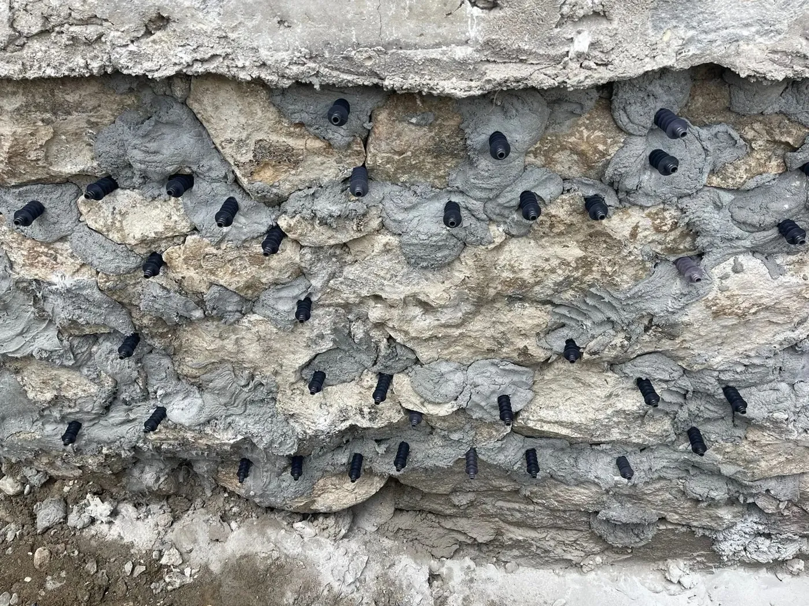
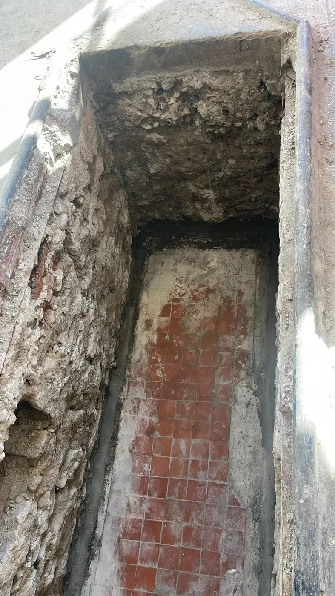
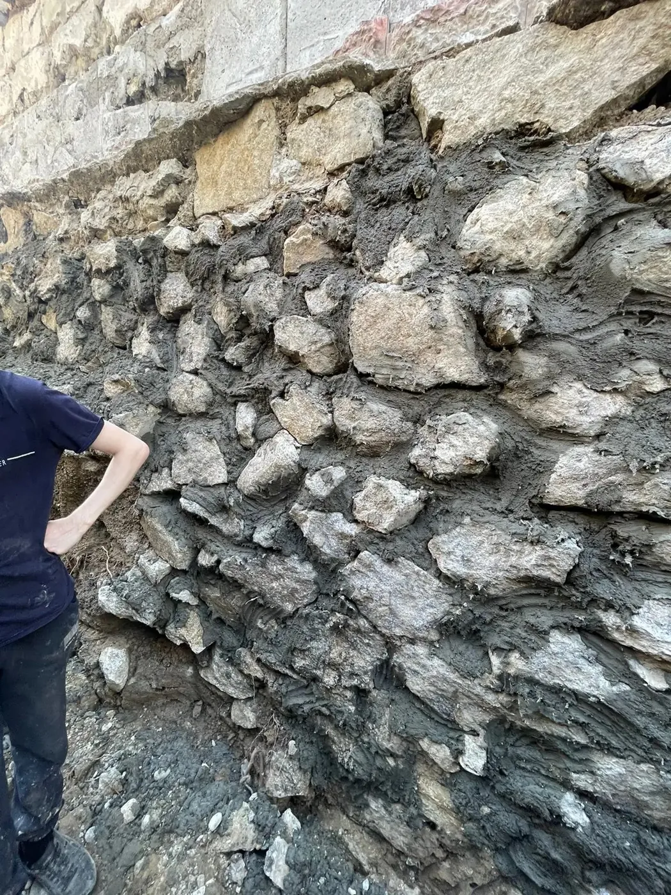
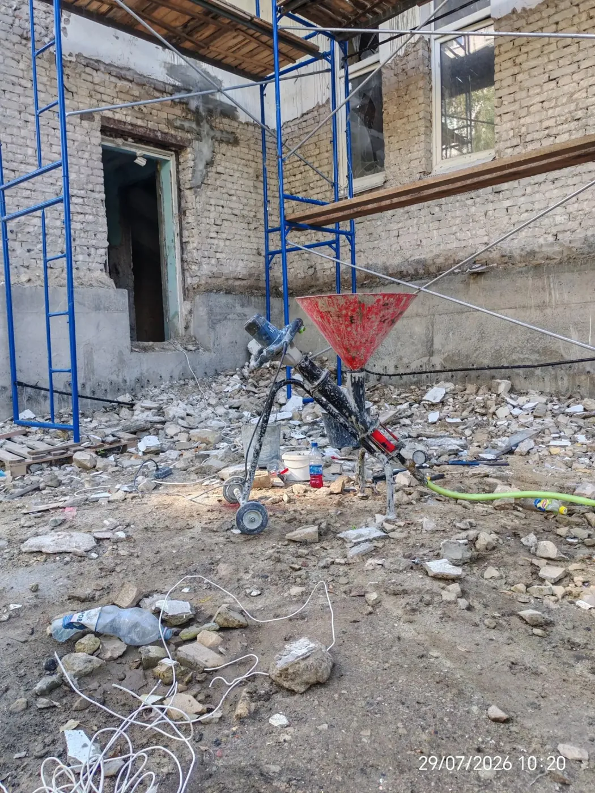
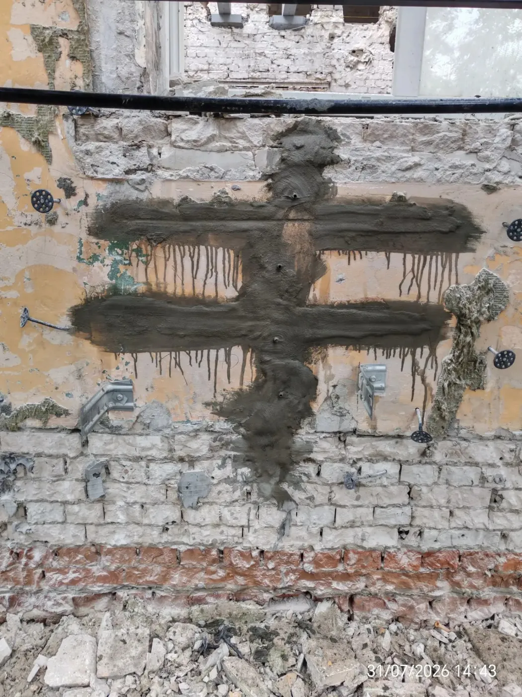
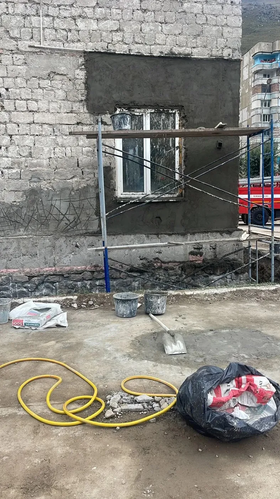
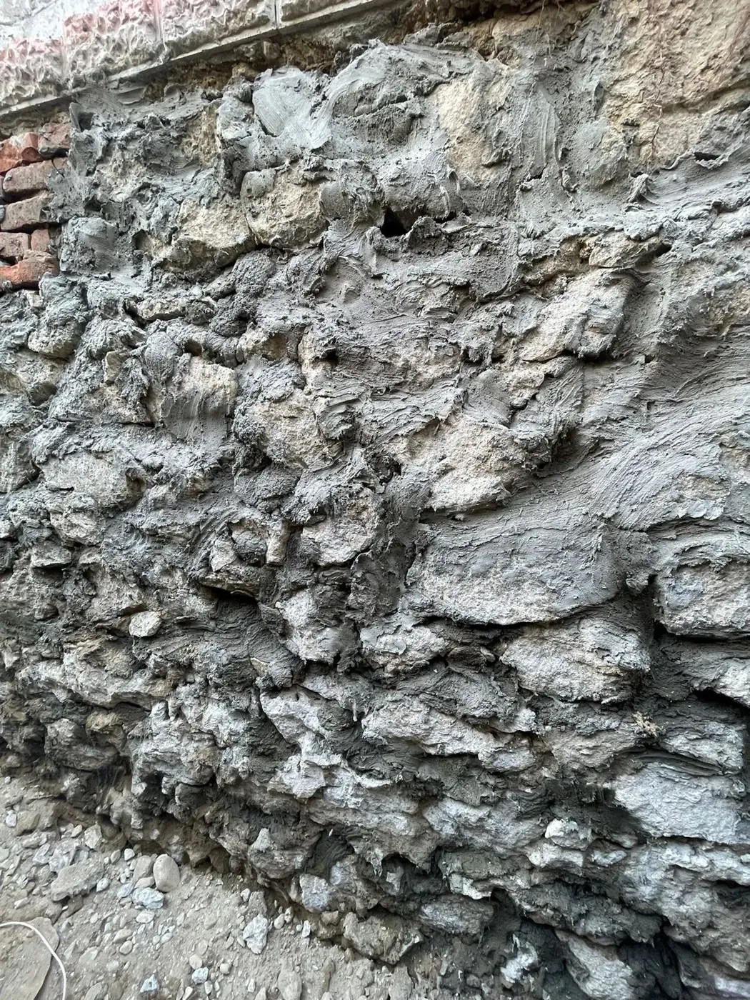
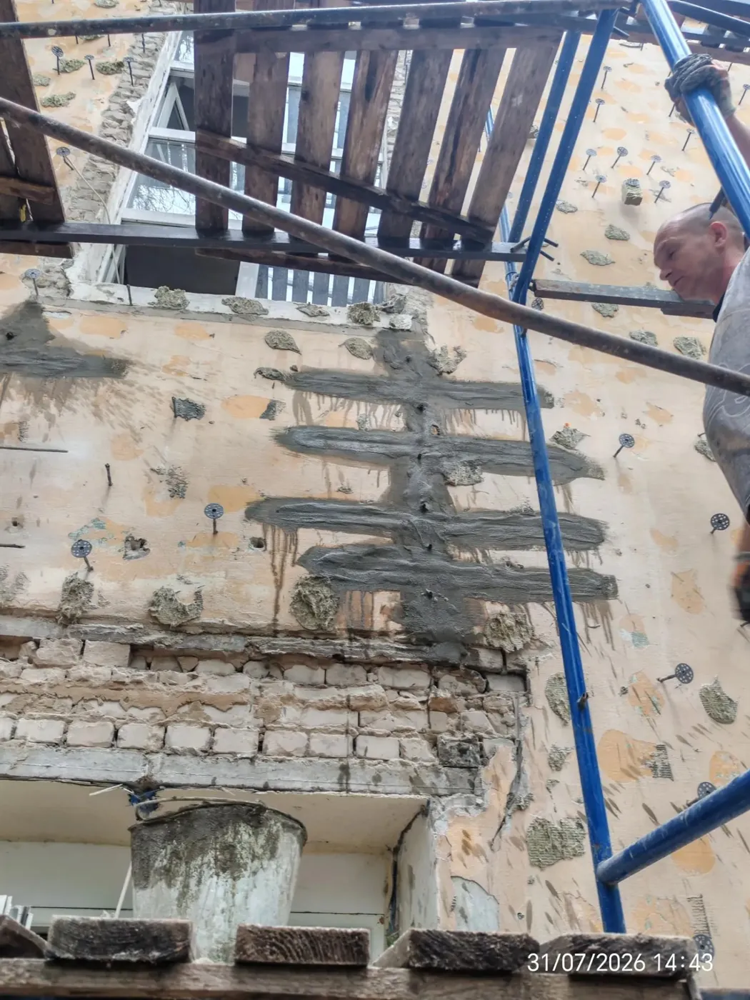
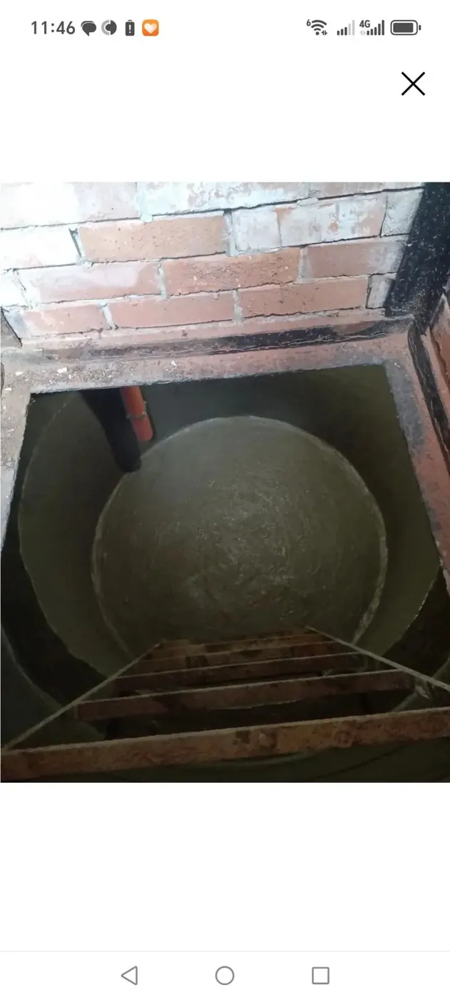

ГИДРОИЗОЛЯЦИЯ И УСИЛЕНИЕ КОНСТРУКЦИЙ · 52 РЕГИОН
Остановим воду.
Укрепим основание.
Инъекционная гидроизоляция, ремонт трещин, усиление фундаментов и укрепление грунтов. Работаем с причинами повреждений, а не только с их последствиями.

вместо стоковых фотографий
Когда конструкция
даёт слабину.
Протечки, трещины и подвижки основания не исчезают сами. Важно найти источник проблемы и выбрать способ восстановления с учётом состояния здания.
Вода в подвале
Сырые стены, вода через холодные швы, примыкания и вводы коммуникаций.
Рассказать о проблеме ↗02 — ТРЕЩИНЫРазрушение бетона
Трещины, дефекты кладки, разрушенные участки, потеря герметичности.
Рассказать о проблеме ↗03 — ФУНДАМЕНТОслабление основания
Просадки, пустоты и локальные дефекты, требующие инженерной оценки.
Рассказать о проблеме ↗04 — ГРУНТНестабильный грунт
Необходимость укрепления грунтов и откосов в условиях конкретного объекта.
Рассказать о проблеме ↗Инженерные решения.
Без лишних работ.
Разные конструкции и дефекты требуют разных технологий. Мы не обещаем универсального ремонта без осмотра.
Инъекционная гидроизоляция
Заполнение трещин, швов, полостей и путей проникновения воды.
Гидроизоляция подвалов и фундаментов
Герметизация конструкций, примыканий и технологических швов.
Ремонт трещин и восстановление бетона
Подготовка основания, локальный ремонт и восстановление узлов.
Усиление фундаментов и оснований
Работы по проектному решению после оценки причин деформаций.
Укрепление грунтов и склонов
Инъекционные и другие методы стабилизации с учётом инженерных условий.
Остановка активных течей
Локализация поступления воды через швы, трещины и дефекты бетона.
Вода ищет путь.
Мы находим точку входа.
Чтобы показать принцип, используем не абстрактную «синюю молнию», а упрощённый разрез стенового элемента: граница влажного грунта, раскрытие трещины, пакер и зона заполнения.
Вода движется от влажного грунта по раскрытию трещины. Переключите схему, чтобы увидеть принцип инъекционного заполнения.
Условная инженерная иллюстрация, не масштабный чертёж. Расположение пакеров, материал и технология определяются по конструкции и задаче.
Работу видно
в деталях.
Настоящие фотографии этапов работ: ремонт повреждённых участков, инъектирование, подготовка и восстановление конструкций. Никаких нейросетевых «готовых объектов».









Эти кадры показывают процессы и отдельные этапы работ. Адреса, параметры объектов и достигнутые результаты уточняются перед публикацией подробных кейсов.









Укрепление грунтов
и склонов.
Видео показывает рабочий процесс на объекте. Посмотрите, как выглядит реальная работа на площадке — без постановочной съёмки.
Для воспроизведения нажмите на видео. Звук отключён в демонстрационной версии.
Нужна оценка объекта? ↗Сначала понять.
Потом ремонтировать.
Серьёзные проблемы с водой и конструкциями требуют не только материалов, но и правильной последовательности работ.
Обследование
Уточняем характер проблемы, доступ, состояние конструкции и условия эксплуатации.
Решение и смета
Подбираем метод и согласуем объём работ, материалы и условия выполнения.
Реализация и контроль
Проводим согласованные работы и фиксируем гарантийные условия.
Условия гарантии уточняются в договоре на конкретные работы.
Нижний Новгород
и область.
Обсуждаем работы по всем районам Нижнего Новгорода и выезды в населённые пункты области. Возможность и условия выезда зависят от объекта.
Богородск · Балахна
Нижегородская область
Без сложных
объяснений.
Если вы не уверены, какую технологию выбрать, это нормально: опишите симптомы, и мы начнём с выяснения причины.
Можно ли устранить течь изнутри без раскопки? +
В отдельных случаях да, инъекционная технология позволяет работать изнутри. Решение зависит от характера дефекта и состояния конструкции.
Вы занимаетесь усилением фундаментов? +
Да, рассматриваем задачи восстановления и усиления оснований. Метод подбирается после обследования и, когда требуется, на основании инженерного проекта.
Сколько стоит ремонт трещины? +
Стоимость зависит от длины и раскрытия трещины, влажности, доступа, глубины работ и применяемой технологии. Точную смету можно составить после оценки объекта.
Что входит в гарантию? +
На работы заявлена гарантия 3 года. Перечень работ, условия и ограничения фиксируются в договоре.
Есть проблема
с водой или основанием?
Опишите ситуацию, укажите удобный номер — специалист сможет уточнить исходные данные и предложить дальнейшие действия.